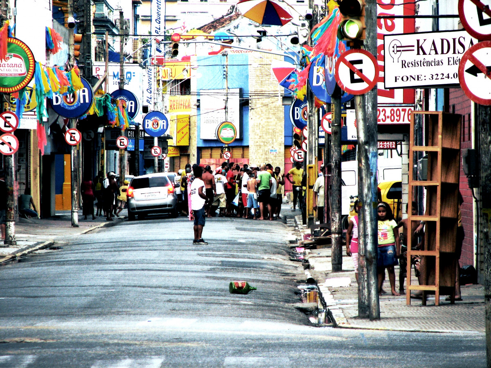
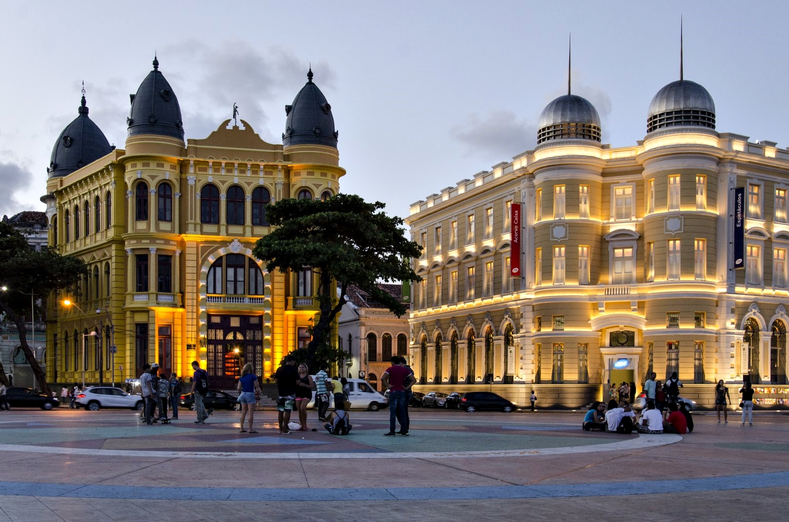
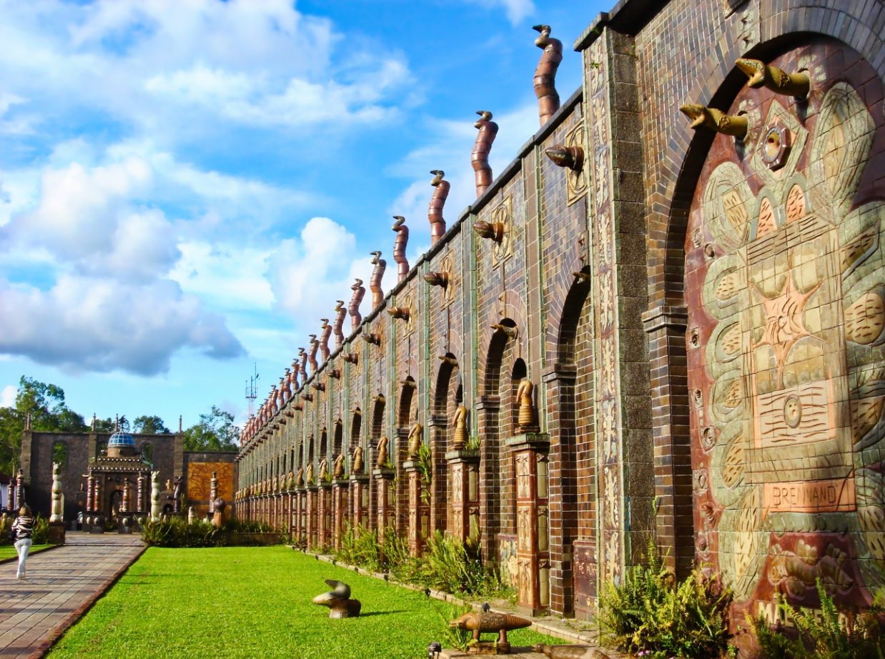
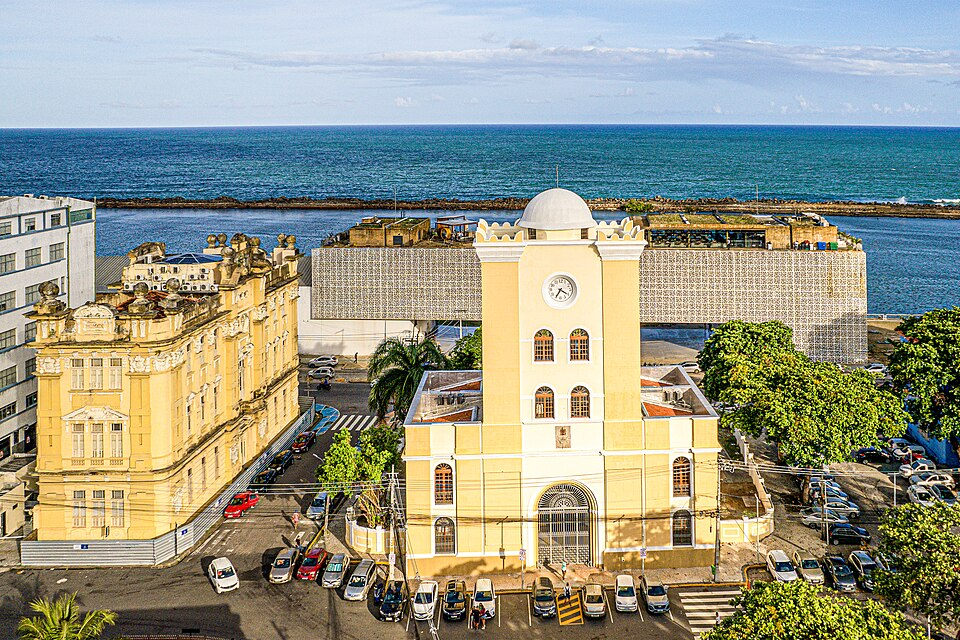

Sua próxima viagem:
Conheça Recife

Recife, a vibrante Veneza Brasileira, oferece de tudo, desde restaurantes de frutos do mar de primeira linha até as tradicionais barracas de caldinho à beira-mar. Aqui, exploramos a capital pernambucana e descobrimos as suas irresistíveis ofertas culinárias.
Para os amantes de história e cultura
Descubra 3 destinos imperdíveis em Recife
As atrações do Recife variam desde as pontes históricas que cortam os rios da cidade até praias urbanas com águas mornas. Esta cidade litorânea tem algo a oferecer a todos, as famílias podem passar o tempo em praças arborizadas, os compradores podem explorar mercados seculares vibrantes e os amantes da cultura podem desfrutar de longos passeios pelo centro histórico. Os edifícios de época que pontilham as ruas de paralelepípedo do Recife Antigo têm uma arquitetura impressionante que irá encantar os fotógrafos.

1. Praça do Marco Zero
A Praça do Marco Zero é o marco de fundação da cidade localizado na borda leste do bairro do Recife Antigo. Construída à beira do estuário, é um dos pontos mais icônicos da capital, você pode desfrutar de vistas do Parque das Esculturas de um lado e da bela arquitetura histórica do outro.
Bom para:
- História
Saiba mais

2. Instituto Ricardo Brennand
O Instituto Ricardo Brennand é um dos maiores e mais impressionantes centros culturais do Brasil. Ele está localizado no bairro da Várzea, cercado por uma reserva de Mata Atlântica e fica distante da agitação da cidade. O castelo em estilo medieval do complexo é um exemplo magnífico que abriga uma vasta coleção de arte e história.
Bom para:
- História
Saiba mais

3. Torre Malakoff
A Torre Malakoff, localizada no centro do Recife Antigo, é um dos monumentos históricos mais importantes da cidade. Você pode ter vistas espetaculares do topo da torre, construída no século XIX em estilo tunisiano. O espaço funciona como um centro cultural, confira as exposições de arte nas salas internas e o observatório astronômico que costuma encantar os visitantes.
Bom para:
- Casais
- Famílias
- Orçamento
Saiba mais
As melhores coisas para fazer no Recife mostram a reputação da cidade como um importante polo histórico e litorâneo no Brasil. Frequentemente vista como a essência da cultura pernambucana, você experimentará uma atmosfera única em termos de diversidade artística e cultural, já que a capital recebe visitantes do mundo todo o ano inteiro.